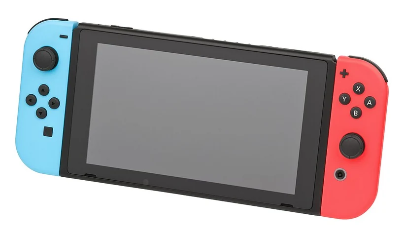

Steam
Steam
스팀 프로필
누적 플레이 시간
약5,461시간
라이브러리 게임 501개
게임플레이 · 레벨 기획자
불빛과 구조물만으로 길이 읽히는 레벨, 동료에게도 할 일이 있는 협동 규칙을 만듭니다. 서커스를 탈출하는 2~4인 협동 게임 〈커튼콜〉의 팀장으로 원안과 묘기 규칙을 구상하고, 탈출로 전 구간을 혼자 설계·구현했습니다.
제 기획은 언제나 “이런 컨셉을 바탕으로 이런 플레이를 하면 재밌지 않을까?”라는 질문에서 시작합니다. 대표적인 예로, 〈커튼콜〉은 “서커스 무대에서 친구들과 떠들썩하게 웃으며 협동하는 게임을 만들면 어떨까?”라는 생각에서 출발했습니다. 그리고 그 아이디어를 바탕으로 인간 대포를 구상했습니다. 내가 대포에 들어가고 건너편의 친구가 나를 받아 준다면, 언제 쏠지 둘이 신호를 맞추는 순간부터 재밌지 않을까?
게임을 만들 때 제가 가장 중요하게 생각하는 건 플레이어가 방금 한 행동을 한 번 더 해 보고 싶게 만드는 일입니다. 저는 그 마음이 재미라고 생각합니다. 그렇기에 그래픽과 에셋을 다듬기 전에 핵심 메커니즘부터 구상하고 만듭니다. 그레이 박스로 직접 플레이해 재미를 확인한 뒤, 다른 플레이어가 어디서 웃고 어느 순간 손을 멈추는지 살피며 규칙을 다듬습니다. 플레이어가 몰입해서 보낸 시간이 즐거운 추억으로 남는 게임을 만드는 것이 제 목표이자 꿈입니다.
제가 동경하는 게임 디렉터 코지마 히데오씨는 자신을 소개할 때 내 몸의 70%는 영화로 이루어져 있다고 이야기합니다. 몸의 절반 이상이 영화로 이루어진 코지마 씨가 제작한 게임을 플레이하며 성장한 저는 몸의 70%가 게임으로 이루어진 게이머가 되었습니다. 게임 속 세상을 즐기고 탐구하던 소년은 게임을 하는 사람에서 만드는 사람이 되기를 꿈꿉니다.

2~4인 협동 서커스 탈출 게임. 전체 묘기와 메커니즘 원안 구상, 인간 대포 협동 규칙 설계·구현, 탈출로 단독 설계와 추격자(골렘) 구현, 팀 일정·범위 관리
핀볼 로그라이트. 수리부품 배치 규칙·보드 기획. 3주간 프로토타입 검증 후 콘셉트 재설계, 열흘 만에 웹 빌드 완성
안내 문구나 경로 표시 없이, 공간만 보고 다음에 갈 곳을 판단하게 만듭니다. 갈 곳은 조명으로 강조하고 헷갈릴 요소는 동선 밖으로 뺍니다. 일행이 한곳에 몰리지 않도록 길을 나눴다가 다시 만나게 합니다.
사례〈커튼콜〉 공장 탈출로
한 사람이 묘기를 하는 동안 동료에게도 판단할 일이 있도록 역할을 나눕니다. 기다리기만 하는 사람이 생기면 규칙의 문제로 보고 다시 설계합니다. 인원이 바뀌어도 같은 규칙이 통하게 만듭니다.
사례〈커튼콜〉 인간 대포
그래픽보다 먼저 기본 도형으로 만들어 직접 플레이해 봅니다. 테스트에서는 플레이어가 어디서 웃고 어디서 손을 멈추는지 살피고, 막힌 지점을 다음 빌드에서 고칩니다.
사례〈커튼콜〉 첫 외줄 공연
팀장으로서 누가 어느 공간을 맡을지, 마감까지 무엇을 만들고 무엇을 뺄지 정합니다. 팀원마다 다르게 만든 조작은 하나로 통일해 플레이어가 다시 배우지 않게 합니다.
사례〈커튼콜〉 팀 운영
많이 해 본 것 자체보다, 해 본 것을 기획에 어떻게 옮기는지가 중요하다고 생각합니다. 아래 기록은 제가 레벨과 규칙을 구상할 때 꺼내 쓰는 재료입니다.
NES의 〈슈퍼 마리오브라더스〉부터 메가드라이브와 SNES를 거쳐 PS5의 〈GTA VI〉까지 여러 세대의 콘솔 게임을 즐겨 왔습니다. 1인 핀볼 〈DOLL EYE PINBALL〉에서는 공을 지킬지 어려운 표적을 노릴지 스스로 고르는 재미에, 협동 게임 〈커튼콜〉에서는 동료를 받아 주는 역할에 집중했습니다.
게임 장면의 분위기를 구상할 때 비슷한 감정을 느꼈던 영화 장면과 음악을 참고합니다. 〈커튼콜〉의 마지막은 어두운 공장 작업장에서 햇빛 가득한 갈대밭으로 나오는 장면이고, 그 순간에 의도한 감정은 안도감입니다.
〈커튼콜〉 탈출로를 다시 만들 때 GDC 강연 ‘Invisible Intuition’과 Valve의 ‘The AI Systems of Left 4 Dead’를 참고했습니다. 구도와 조명으로 길을 읽히게 하고, 추격의 긴장 사이에 관찰할 틈을 배치하는 데 썼습니다.
탈출로에서 보기인문학·과학책에서 새로 알게 된 사실을 게임의 소재로 삼거나 플레이 규칙을 구상할 때 참고합니다.
작성 예정 · 게임 목록을 받으면 채웁니다
누적 플레이 시간
약5,461시간
라이브러리 게임 501개
50개 이상
PS2 · PS4 · PS5


40개 이상
패미컴 · 슈퍼 패미컴 · 메가드라이브
게임보이 어드밴스 · 닌텐도 DS · Wii · 닌텐도 스위치
게임은 Steam·PSN과 개인 플레이 기록, 영화·시리즈는 왓챠피디아 기록을 기준으로 집계했습니다. 콘솔 카드는 10개 단위로 표시하며, ‘게임 목록’에서 정확한 항목 수를 확인할 수 있습니다. 같은 목록에 여러 기종으로 등록된 작품은 한 번만 셌습니다.
발아래는 허공, 눈앞엔 불타는 링. 두 단원의 목숨을 건 외줄 공연이 시작된다.최종 플레이테스트


 브루탈리스트
브루탈리스트